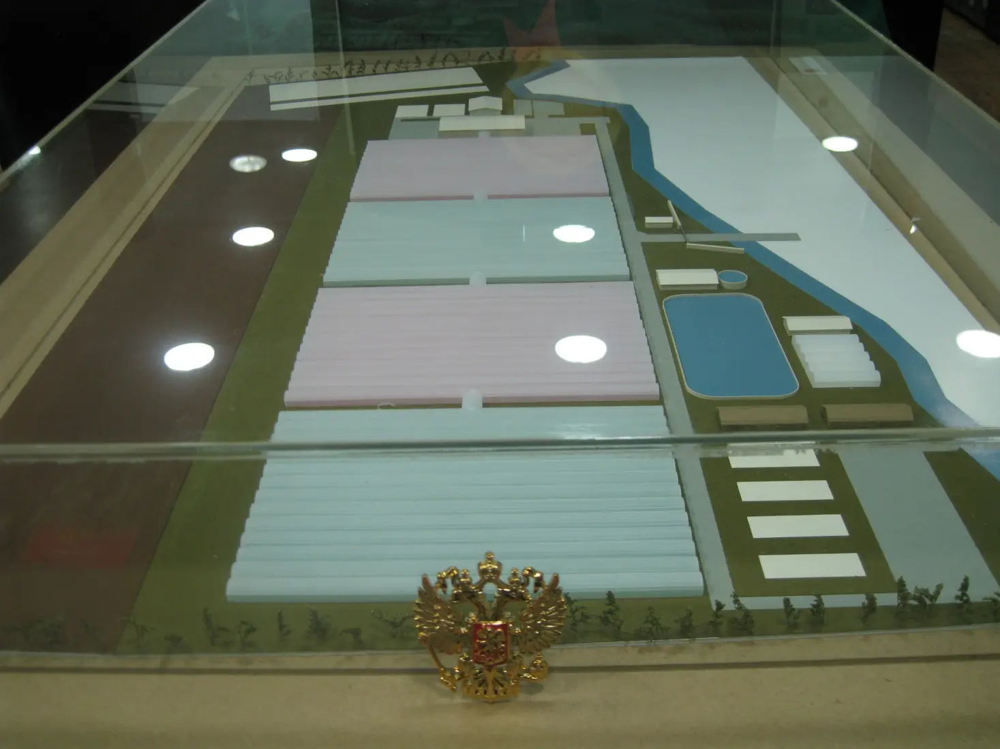

EcoCycle
Промышленный Био-Кластер
Замкнутый био-кластер: отходы перерабатываются в энергию и тепло на заводе метанизации, питают тепличный комплекс и обеспечивают стабильную среду для промышленной аквакультуры.

ГОЛОВНОЕ ПРЕДПРИЯТИЕ
Завод Метанизации ТБО
Генерация энергии и тепла (300 000 т/год)
Подробнее и схемы